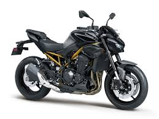
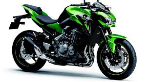

Z900
| Marca |
Modelo |
Ano |
Preço |
Oleo |
| Kawasaki |
Z900 |
2017-atual |
R$43.860,00 |
SAE 10W-40 |
- Curiosidade 1: naked de 948 cc com motor quatro-cilindros em linha.
- Curiosidade 2: Existe uma versão mais “premium” chamada Z900 SE.
- Curiosidade 3: usa quadro treliçado leve para deixar a moto mais ágil.
- Curiosidade 4: Torque: 10,1 kgf.m a 7700 rpm

